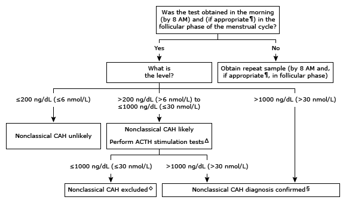

Initial evaluation of high 17-hydroxyprogesterone in adults*

This algorithm is intended for use with additional UpToDate content on CAH.
CAH: congenital adrenal hyperplasia; ACTH: adrenocorticotropic hormone (corticotropin); CYP21A2: encodes the 21-hydroxylase enzyme.
* Then normal range for serum 17-hydroxyprogesterone varies during the menstrual cycle in females (typically <80 ng/dL [<2.4 nmol/L] during follicular phase) and is different in males. Interpretation of a specific abnormal test result should be based upon the reference range reported with that result.
¶ For females with amenorrhea or infrequent menses, or for males, the sample can be drawn in the morning on a random day.
Δ ACTH stimulation test – Measure 17-hydroxyprogesterone and cortisol at baseline and 60 minutes after administration of ACTH (250 mcg).
◊ Consider uncommon forms of CAH.
§ For immunoassays (rather than the more commonly used mass spectrometry-based assays), additional evaluation should be performed when 17-hydroxyprogesterone values are >1000 to 2000 ng/dL (>30 to 61 nmol/L) and when the clinical suspicion and/or family history are discordant. The next step in the evaluation is measuring an ACTH-stimulated serum 21-deoxycortisol and/or genotyping of the CYP21A2 gene.